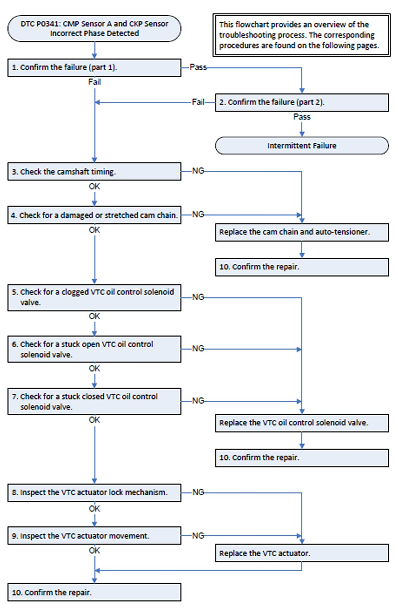
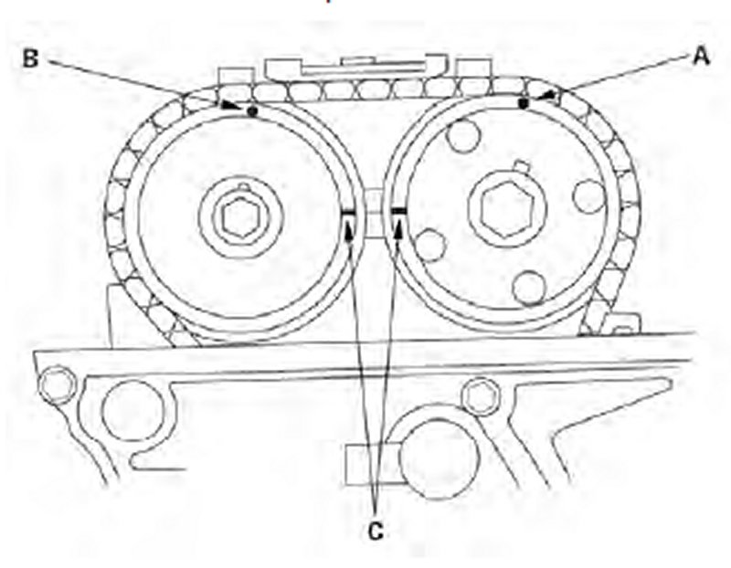
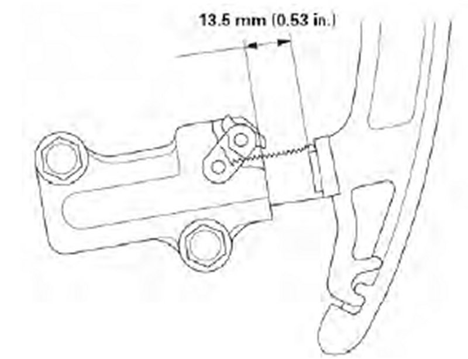
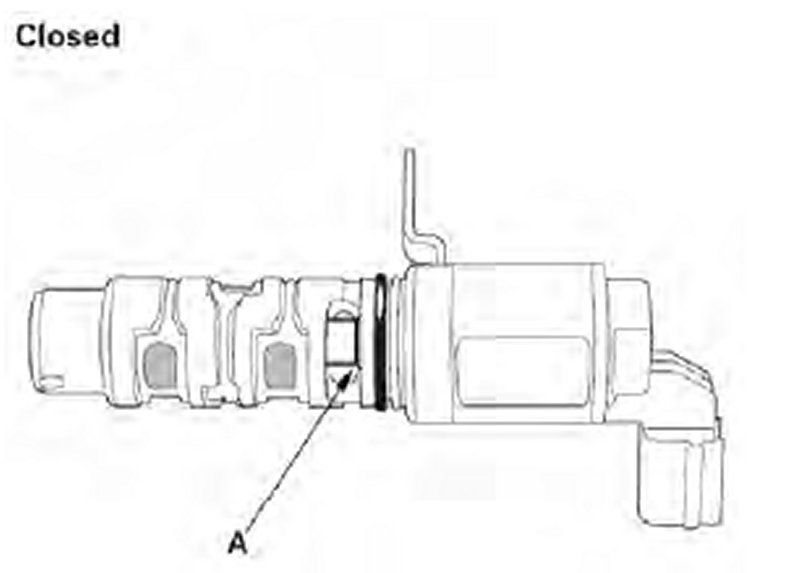
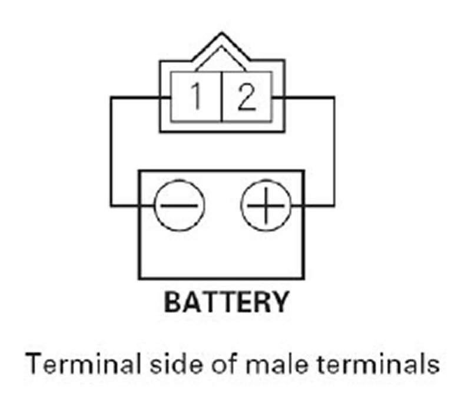
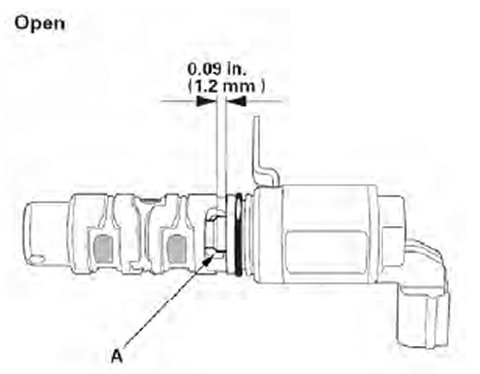
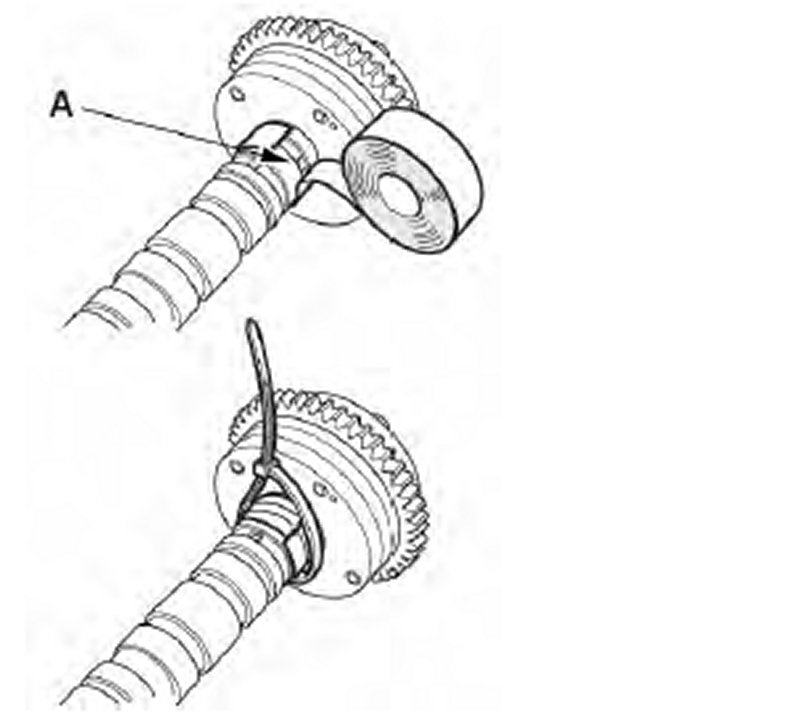
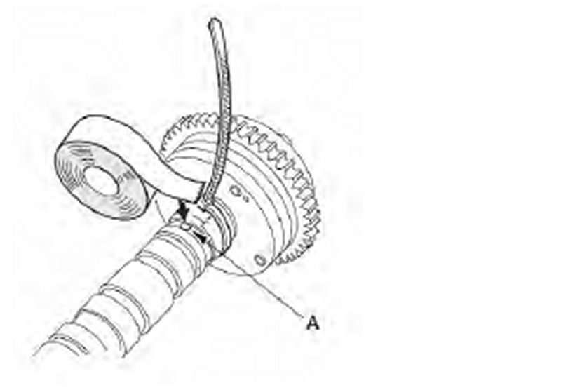
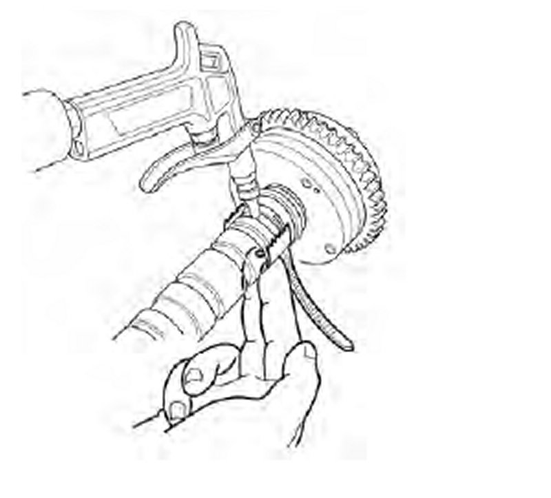
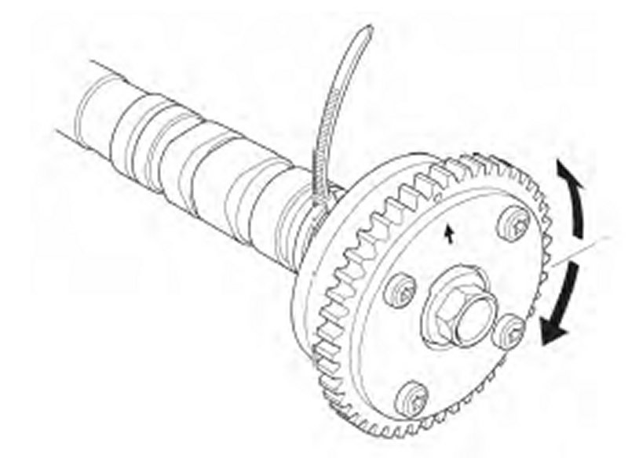

Bulletin Testing
Article from Honda Service News
DTC P0341: CMP Sensor A and CKP Sensor Incorrect Phase Detected
Troubleshooting Flowchart

NOTE: If DTC P0341 has set after replacement of the VTC actuator or other camshaft related repairs, check the keyway of the CMP pulse plates for damage/shearing before beginning troubleshooting. This damage can occur when the camshaft lock pin set is used to hold the camshaft while torquing components.
1. Confirm the failure (part 1):
a) Do the VTC TEST in the INSPECTION MENU with the HDS.
Is the result OK?
YES - Go to step 2.
NO - Go to step 3.
2. Confirm the failure (part 2):
a) Clear the DTC with the HDS.
b) Test-drive at a steady speed between 19-38 mph (30-60 km/h) for 10 minutes.
c) The VTC STATUS in the DATA LIST should read ON during the test drive.
d) Monitor the OBD STATUS for DTC P0341 in the DTCs MENU with the HDS.
Does the screen indicate FAILED?
YES - Go to step 3.
NO - If the screen indicates PASSED, the failure is intermittent and the system is OK at this time. Check for poor connections or loose terminals at the VTC oil control solenoid valve and the ECM/PCM. If the screen indicates NOT COMPLETED, go to step 2 and recheck.
3. Check the camshaft timing:
a) Remove the cylinder head cover.
b) Rotate the crankshaft pulley two turns clockwise.
c) Set the No. 1 piston at top dead center (TDC). The punch mark (A) on the variable valve timing control (VTC) actuator and the punch mark (B) on the exhaust camshaft sprocket should be at the top. Align the TDC marks (C) on the VTC actuator and the exhaust camshaft sprocket.

Is the camshaft timing OK?
YES - Go to step 4.
NO - Replace the cam chain and auto-tensioner, then go to step 10.
4. Check for a damaged or stretched cam chain:
a) Remove the cam chain case.
b) Measure the tensioner rod length between the tensioner body and bottom of the flat surface section on the tensioner rod.

Is the tensioner rod length greater than 13.5 mm (0.53 in.)?
YES - Replace the cam chain and auto-tensioner, then go to step 10.
NO - Go to step 5.
5. Check for a clogged VTC oil control solenoid valve:
a) Inspect the VTC oil control solenoid valve strainer for clogging or debris.
Is the strainer clogged?
YES - Replace the VTC oil control solenoid valve, then go to step 10.
NO - Go to step 6.
6. Check for a stuck open VTC oil control solenoid valve:
a) Note the amount of valve opening by observing the position of the piston shoulder (A) through the valve retard drain port.

Is the shoulder of the piston visible?
YES - The valve is stuck open. Replace the VTC oil control solenoid valve, then go to step 10.
NO - Go to step 7.
7. Check for a stuck closed VTC oil control solenoid valve:
a) Connect the battery positive terminal to VTC oil control solenoid valve 2P connector terminal No. 2.

b) Connect the battery negative terminal to VTC oil control solenoid valve 2P connector terminal No. 1.

Is at least 0.09 in. (1.2 mm) of the inner valve (A) visible?
YES - Go to step 8.
NO - The valve is stuck closed. Replace the VTC oil control solenoid valve, then go to step 10.
8. Inspect the VTC actuator lock mechanism:
a) Remove the cam chain.
b) Check that the variable valve timing control (VTC) actuator is locked by turning the VTC actuator counterclockwise. If it is not locked, turn the VTC actuator clockwise until it stops, then recheck it. Does the VTC actuator lock?
YES -Go to step 9.
NO - Replace the VTC actuator, then go to step 10.
9. Inspect the VTC actuator movement:
a) Loosen the rocker arm adjusting screws.
b) Remove the camshaft holder.
c) Remove the intake camshaft.
d) Seal the retard holes (A) in the No. 1 camshaft journal with tape and a wire tie.

e) Seal over one of the advance holes (A) with tape.

f) Apply air to the unsealed advance hole to release the lock.

g) Check that the VTC actuator moves smoothly.

Does the VTC actuator move smoothly?
YES - Remove the wire tie, the tape, and any adhesive residue. Inspect the CMP pulse plates for damage and replace if damage is found. Go to step 10.
NO - Replace the VTC actuator and remove the wire tie, the tape, and any adhesive residue, then go to step 10.
NOTE: Do not use the camshaft lock pin set to hold the camshaft during VTC actuator replacement. This may damage the CMP pulse plates and cause DTC P0341 to reset.
10. Confirm the repair:
a) Reinstall any removed components.
b) Reconnect any disconnected electrical connectors.
c) Turn the ignition switch to ON (II).
d) Reset the ECM/PCM with the HDS.
e) Clear the CKP pattern with the HDS.
f) Do the ECM/PCM idle learn procedure.
g) Do the CKP pattern learn procedure.
h) Test-drive at a steady speed between 19-38 mph (30-60 km/h) for 10 minutes.
i) The VTC STATUS in the DATA LIST should read ON during the test drive.
j) Monitor the OBD STATUS for DTC P0341 in the DTCs MENU with the HDS.
Does the screen indicate PASSED?
YES - The system is OK.??
NO - If the screen indicates NOT COMPLETED, go to step 10-h and recheck. If the screen indicates FAILED,check for poor connections or loose terminals at the VTC oil control solenoid valve and the ECM/PCM, then go to step 3.